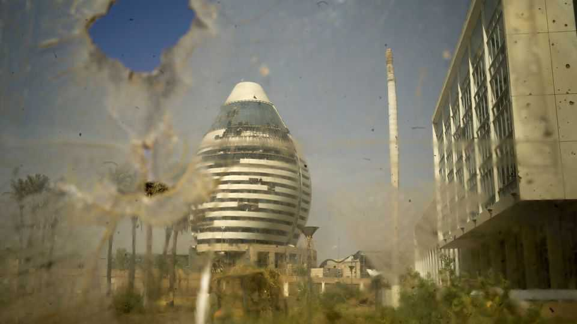
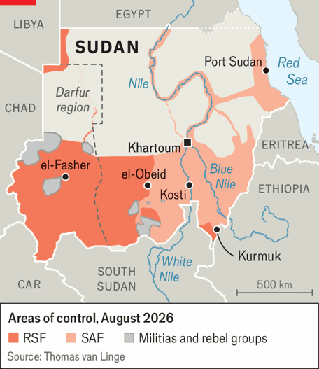
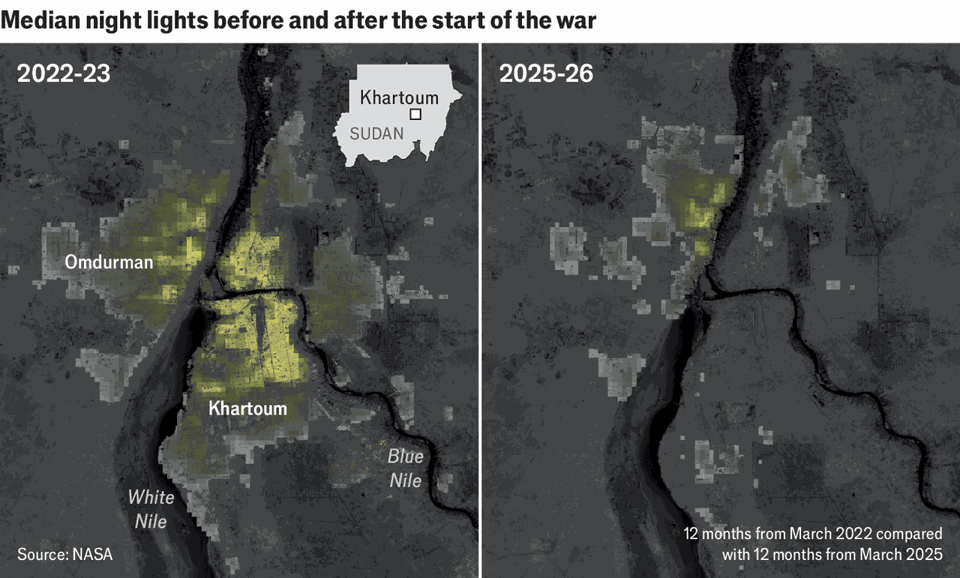
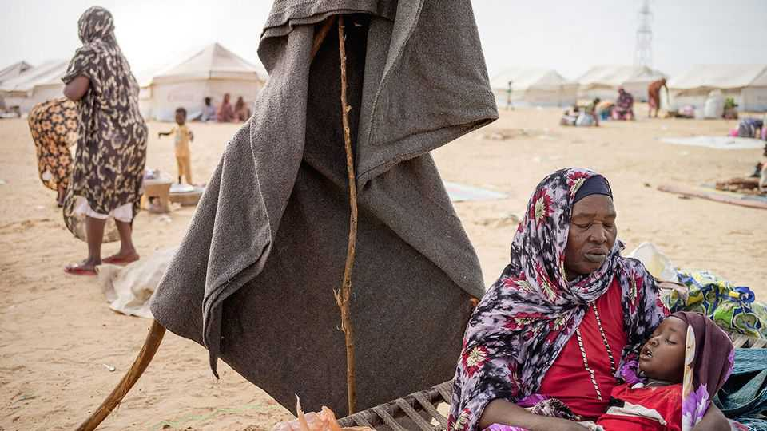

A battle for supremacy has laid Sudan and its capital to waste
The country’s future depends on events beyond its borders, as well as within them

Aug 6th 2026
The first thing your correspondent noticed, driving through the streets of Khartoum, was the quiet. Before the current civil war broke out three years ago, Sudan’s capital city was a bustling metropolis, the most substantial industrial base in the Sahel and home to 6m-9m people. Today there is just absence. It feels like Aleppo or Gaza: a city in ruins.
The devastation is the result of a brutal battle for control between the two parties to the war—the Rapid Support Forces (RSF), well-financed paramilitaries, and the Sudanese Armed Forces (SAF), Sudan’s regular army. The conflict began on April 15th 2023; for nearly two years of fighting the RSF controlled most of the capital, including the historic centre around the presidential palace and the airport. As many as 5m residents fled their homes. Only in March last year did the SAF drive them out.
The war between the RSF and the SAF rivals that between Ukraine and Russia as the world’s most destructive current conflict. Hundreds of thousands have probably been killed, and according to the UN High Commissioner on Refugees some 14m have been displaced. That makes it the largest forced movement of people so far this century.
The SAF would like the world to think that the war is now in its final stages. Without new initiatives, that seems unlikely. The SAF, led by General Abdel Fattah al-Burhan, the head of the army and Sudan’s de facto president, has recently made real military gains. But it might struggle to maintain that momentum, says Kholood Khair of Confluence Advisory, a Sudanese think-tank. The RSF, led by Mohammed Hamdan Dagalo, better known as Hemedti, still has strongholds in Darfur, the region from which most of its fighters come.
What is more, as the war drags on it also becomes more fragmented. There are estimated to be at least 150 different militias involved in the conflict, and the number is increasing. Many are organised along ethnic or local lines. And the increasing use of drones means that ever less of the country can see itself as safe.
Outright victory by force of arms seems unlikely. The belligerents’ foreign backers—in the RSF’s corner chiefly the United Arab Emirates (UAE), in the SAF’s Egypt, Turkey, Saudi Arabia and Qatar—could push for a settlement. But long-standing tensions between them remain high. Iran’s closure of the Strait of Hormuz strengthens the strategic interest that the Gulf powers take in Sudan’s Red Sea coast. But those interests are not fully aligned.

The SAF, keen to further its narrative of the end being in sight, wants Khartoum seen as a city in recovery. Perhaps 2m have come back to their homes since General al-Burhan returned. He and his allies think the trappings of sovereignty conferred by control of the capital are a vital source of legitimacy. Showing that Khartoum is safe, secure and on the road to economic recovery sends a powerful political message to adversaries at home and allies abroad.
Progress, however, is mixed. In some parts of the city electricity and water supplies have indeed been restored, though only sketchily. Schools, hospitals and ministries are reopening. “You can see smiles again,” says Sulima Ishaq, the minister for social welfare. There are no scheduled international flights coming into Khartoum’s airport and a fear of drone attacks—it was hit by one in May—means the UN often cancels humanitarian flights, too. But regular internal flights have restarted. The iconic Grand Hotel, which dates back to days of British colonial rule, has partially reopened; the five-star Corinthia (pictured on previous page) has not done as well. Foreign embassies that relocated to Port Sudan have yet to return.
Though crime is said to have increased, Khartoum feels safe enough to drive through without a security escort, even after dark. Such journeys reveal little by way of physical reconstruction. Even in Omdurman on the west bank of the Nile, which is mostly residential and saw comparatively little fighting, “the scars are everywhere,” sighs a resident. One of the most prominent, sitting right next to the river, is the ruined parliament building.

Drive across the bomb-scarred bridge next to the parliament into the city centre opposite and the damage becomes ever more evident, from the scorched shell of the defence ministry to what remains of the central bank. Almost all the buildings in more upmarket neighbourhoods were stripped meticulously of anything that could be looted by the RSF. They remain abandoned. In many places only the poorest and most desperate have returned. Every street is half-empty—and, at night, pitch black (see graphic).
The city is littered with unexploded munitions. According to the UN some 40,000 have so far been uncovered, but only 1% of the city has been safely cleared. “The needs far outweigh existing capacity,” says Ollie Thomson of the HALO Trust, a British de-mining charity set to start clearance operations there soon.
Even close allies such as Saudi Arabia are loth to stump up for reconstruction. “The risk that you rebuild and it is destroyed again is much too high,” says a senior European diplomat. So for now the SAF-led government, which gets its money mostly from exports of gold and gum arabic, must pay for any repairs itself. This puts it in a bind. It needs money for reconstruction so as to look as if it is winning; but it also needs money to actually win. “We are fighting a war and resources are needed for war,” says Malik Agar, the number two in General al-Burhan’s junta.
The SAF has not had things all its own way since its return to Khartoum. Last October el-Fasher, the capital of Darfur, finally fell to the RSF after an 18-month siege. As many as 60,000 residents may have been killed during the assault, which UN investigators said bore the “hallmarks of genocide”; it left the RSF almost fully in control of Darfur, a region the size of France.
Lately, though, the tide appears to have turned back in the SAF’s favour. In early July they took back Kurmuk, a strategic town on the south-eastern border with Ethiopia which the RSF and local rebels seized earlier this year. Weeks later they took a string of towns along the main road between Khartoum and el-Obeid, a city of perhaps half a million which is the capital of North Kordofan. Ms Khair of Confluence Advisory sees these breakthroughs as the SAF’s first “big win” since the recapture of Khartoum last year.
El-Obeid, currently held by the SAF, is almost surrounded by the RSF; there have been credible fears of an impending massacre like that at el-Fasher. In recent days the RSF has reportedly launched fresh drone strikes and other attacks on towns around el-Obeid, forcing thousands of residents to flee. Mr Dagalo has warned, ominously, that he is “unleashing” his fighters.
The SAF’s recent victories put it in a position to relieve its forces there. “The militia is now in its final stage of decline…it is completely exhausted,” boasts Lieutenant General Qamar al-Din Mohammed, governor of White Nile state. A visit to Kosti, the capital of that state and a key staging point on the way to el-Obeid, suggests the exhaustion is less than complete. The charred remains of two petrol stations destroyed by drones in May are stark reminders of the RSF’s reach. The main road to el-Obeid is still so dangerous that drivers have taken to smearing the fuel tankers they take along it with mud in hope of escaping the eyes and weapons in the sky.
The army’s new gains make it less likely that el-Obeid will fall to the RSF, which would shatter the SAF’s pretensions to victory. But it is also always possible that neither side will succeed in establishing firm control of the city. If so, el-Obeid will continue to represent the war in microcosm: a grinding, atrocity-strewn stalemate.
A short drive from Kosti reveals another microcosm. About 20,000 refugees from across Sudan are sheltering in ragged tents made from wooden sticks and blankets. Raja Abdelgadir Ali arrived at the camp from el-Obeid about two months ago. She fled after a bomb hit a school near her home, killing several neighbours; her husband stayed behind to help defend the city. Conditions in the camp are appalling: Mrs Ali’s four-year-old daughter died a week ago (of measles, she believes). Refugees keep arriving.
The ebb and flow in the forces’ fortunes is largely a function of foreign backing. Drones from Turkey and Iran helped the SAF retake Khartoum. The UAE, which supported the RSF earlier in the war, denies any continuing role; but it is reported to have stepped up shipments of weapons in the months preceding the massacre at el-Fasher. The SAF’s current fortunes are linked to what Jonas Horner of the European Council on Foreign Relations, a think-tank, says has been a surge in weapons deliveries from Turkey. Control of Port Sudan means the SAF can be supplied by both air and sea.
This dependence might be thought to offer a way for outsiders to quell the conflict. But the forum created to discuss that possibility—an entity called the Quad that is made up of America, Egypt, Saudi Arabia and the UAE—has had little success. In September 2025, as the noose tightened around el-Fasher, it called for a ceasefire and a post-war settlement involving neither the SAF nor the RSF. Ten months later both goals remain elusive.
That is chiefly because of a widening rift within the Quad itself. When General Burhan and Mr Dagalo, then Sudan’s de facto president and vice-president respectively, seized power together in 2021, Saudi Arabia and the UAE worked side-by-side to shore up their regime. But after the SAF and RSF took up arms against each other two years later, the Gulf powers chose sides.
The UAE thinks the army is too close to Iran and beholden to Islamists like those who found favour under Omar al-Bashir, Sudan’s dictator for the three decades up to 2019. The UAE has spent a decade or more building a network of proxies across the region, including in Somalia, Yemen and Libya, in order to project power in the Red Sea and advance its economic interests. The RSF is one of its crucial nodes.
Saudi Arabia and Egypt, which has ties to Sudan’s armed forces that date back to the colonial era, regard any outcome in which the SAF is forced to relinquish power in Khartoum as unacceptable. “We must clearly distinguish between the army, which represents the legitimate state, and the [RSF] militia, which is not legitimate,” says Rayed Krimly, a senior Saudi foreign-ministry official. During a visit to the White House in November Muhammad bin Salman, the Saudi crown prince, urged President Donald Trump to expand the sanctions America has placed on the RSF.
Finding common cause in such conditions might well defeat a more experienced and better staffed negotiator than Massad Boulos, who is father-in-law to Tiffany Trump, Mr Trump’s daughter, and Mr Trump’s point man for the negotiations. His tenure has seen America wobble back and forth. Earlier this year it imposed sanctions on some of the RSF’s leaders and on companies linked to them. In March Islamists linked to the SAF, and referred to by the state department as the “Sudanese Muslim Brotherhood”, were designated as a terrorist organisation receiving support from Iran’s Revolutionary Guard Corps. On July 20th it slapped new sanctions on Sudan on the basis of reports that the SAF had used chemical weapons in 2024.
“The Americans have lost interest and don’t have the bandwidth,” says a mediator from another country. And as yet it has failed to gain any leverage from the war it started against Iran. Hopes that the shared threat of reprisals from Iran would encourage the two Gulf states to bury the hatchet have so far proved hollow. With Yemen’s Iran-backed Houthis attacking Saudi oil tankers, competition for influence over the Red Sea could intensify. “Ultimately the coast [of Sudan] matters, and matters more than ever with the Iran war,” says Kate Almquist Knopf, a former American official in Sudan. Yet the backers in the Gulf could come to see that they have a shared interest in a more stable Sudan.
Now Saudi Arabia is trying to move the Quad’s proposal away from a plan for both the SAF and the RSF to pull out of certain cities and create humanitarian safe zones, and towards one in which the first step is for the RSF to withdraw from some places unilaterally. The SAF, for its part, has been pursuing direct talks between General Burhan and Muhammad bin Zayed, the UAE’s president. “We have to find out what [the Emiratis] want,” says Mr Agar.
The SAF probably sets too much store on negotiations with the UAE as an end run round the RSF. Mr Dagalo’s forces have both the means and the will to keep fighting independently. But for now the question is moot. Attempts to set up a meeting to discuss how “negotiable” the UAE’s interests might be have been rebuffed five times, Mr Agar says. To deal with the SAF directly would mean the UAE was tacitly treating the army as its sovereign equal and acknowledging its support for the RSF.

It is hard to see how an end to hostilities comes about without the two sides negotiating directly. Unfortunately it is also quite easy to see how such negotiations might push the members of each side’s coalition apart. The SAF has in its camp both Islamists from the Bashir regime and Darfuri rebels who once fought against it. Tensions between them are rising. The Joint Forces, an outfit of former rebels which fought alongside the SAF in el-Fasher, are “not the same strong allies as they were,” says Adam Abdel-Rahman Ahmed, a former land commissioner in Darfur. The RSF, for its part, contains mercenaries lured by the prospect of loot. With nothing left to fight over, it could splinter into rivalrous gangs.
The pause in fighting normally associated with the summer rains might provide an opportunity for taking stock. But the rains appear late; if the developing El Niño climate pattern weakens them further, the fighting could continue even as crops fail. It is hard to summon hope.
Mr Agar says his greatest fear is that war becomes “habitual”. In the squalid camp outside Kosti, Mrs Ali would have sad cause for saying it already is. ■